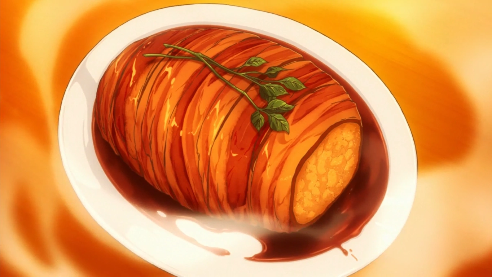

Roast Pork, Just Kidding

This dish was made with the purpose of simulating meat without having acces to it
Ingredients
- 6 white potatoes.
- 3 Eringi mushrooms
- 1 large white onion, or 2 medium white onions.
- 1 sprig of rosemary.
- Butter. I suggest 2 tablespoons (30ml), but you could always used a bit more.
- 2 packs of thick-cut bacon.
- 1 cup, or 250ml of red wine. We used a Pinot Noir since its preferable for cooking.
- 1/4 cup, or 60ml of sake. Any sake that is labeled as “sweet” should do.
- 2 tbs, or 30ml of soy sauce.
- 1 spring of parsley or any garnish.
Steps
- Peel the potatos.
- Slice the potatoes into quarters or halves.
- Chop the mushrooms and onions into equally-sized small cubes (5-6cm).
- Steam the potatoes until soft (about 15-20 minutes).
- Pan Fry the onions and mushrooms until caramelized or fully golden.
- Prep the pan with a tablespoon of butter.
- Mash the potatoes into small chunks in a large bowl.
- Combine the onion and mushroom mix with the potato mash.
- Pick the rosemary off its stem.
- Add the salt to the top of the bowl.
- Form the fake roast.
- Let the mix cool until touchable (more than 5 minutes). CAUTION HOT
- Take all of the mix and form it into a log shape.
-
-
-
-
-
-
-
-